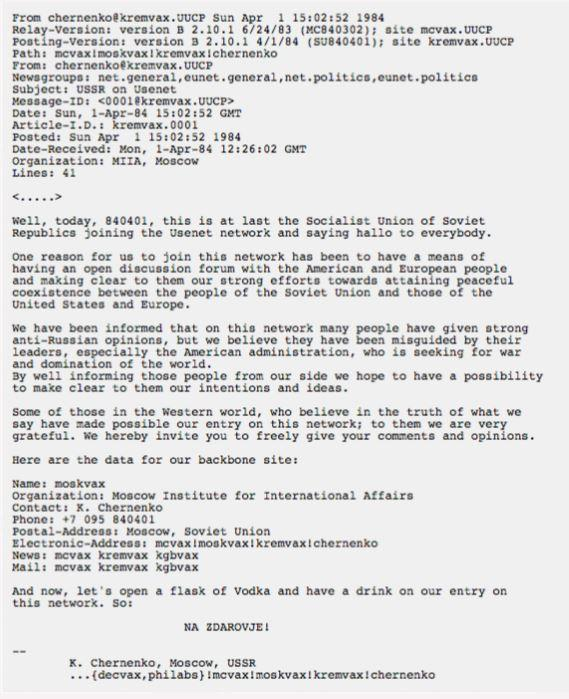
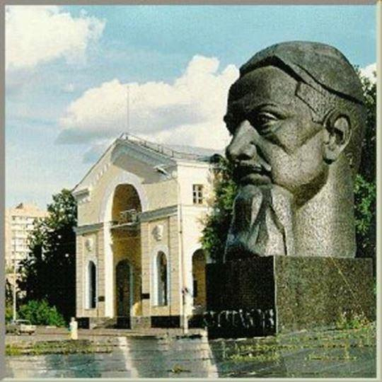
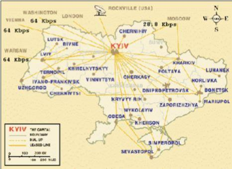

En 1979, un groupe d'étudiants de Caroline du Nord a tenté de relier des ordinateurs entre deux universités voisines et ils ont presque accidentellement inventé Usenet, un système de réseaux de forums fonctionnant dans un environnement Unix, qui était le prototype des réseaux sociaux d’aujourd’hui. Usenet était une abréviation de Unix : User Network Usenet. Il fonctionnait publiquement et était peu ou pas censuré. Usenet a été très efficace dès le début pour se servir de lui-même, capable de mener une surveillance interactive de ses communications, de créer ses propres « moments de célébrités » et d’enregistrer ses activités dans ses propres chroniques.
Usenet, à l'origine indépendant, a rapidement été connecté à ARPAnet, le futur internet ; toutefois Usenet n’est pas Internet et il pourrait exister sans ce dernier. Le 1er avril 1984, fût publiée une lettre de bienvenue signée par Konstantin Chernenko, alors chef du Parti communiste de l’Union Soviétique. La lettre annonçait que l'URSS avait adhéré à Usenet et disait : « Aujourd'hui, le 840401, c'est l'Union des Républiques Socialistes Soviétiques qui rejoint enfin le réseau Usenet et qui dit bonjour au monde entier.
La raison pour laquelle nous avons rejoint ce réseau est de pouvoir avoir un forum de discussion ouverte avec le peuple américain et européen et de leur expliquer clairement nos efforts résolus pour maintenir une coexistence pacifique entre les peuples de l'Union soviétique et ceux des États-Unis et de l’Europe. » C’était bien sûr, un canular de poisson d'avril, publié par Piet Beertema, pionnier de l'internet néerlandais, du Centre national néerlandais de recherche en mathématiques et en informatique (CWI). Il a utilisé la fausse identité « Kremvax » et a rencontré un vif succès parmi les utilisateurs. Selon Beertema, sa plaisanterie aurait même été appréciée au Pentagone, où la « lettre de Chernenko » a provoqué une discussion animée sur la sécurité de l’information. La plaisanterie était d'autant plus amusante que l'idée d'une connexion Internet à l'URSS était ridicule : personne ne s'attendait à ce que de vraies personnes puissent se connecter derrière le rideau de fer. Le secrétaire général du Parti communiste de l'Union soviétique, Mikhaïl Gorbatchev avait lancé un programme ambitieux de réformes de restructuration économique et de transparence politique. Il a voyagé souvent dans le monde capitaliste, des Américains se sont rendus en URSS pour la première fois et un club d’informatique a été créé à l’Université d’État de Moscou. Usenet attend donc ses premiers membres de l'Union soviétique. Un message est apparu sur la page du groupe talk.politics.soviet intitulée « Les Russes arrivent ». Les utilisateurs se demandaient comment communiquer avec des gens de l’URSS qui ne parlaient pas bien anglais. Car les soviétiques étaient interdits de posséder des ordinateurs personnels ou même des photocopieurs, alors comment pourraient-ils accéder à Internet ? Et s’ils parvenaient à le faire, cela ne compromettrait-il pas la sécurité de l’État et les agences de renseignement américaines devraient-elles en être informées ?
Ces questions ont occupé les utilisateurs Usenet pendant des mois. Enfin en 1990, des programmeurs de l'Institut Kurchatov de Moscou (la principale institution de recherche et de développement dans le domaine de l'énergie nucléaire en Russie), qui avaient créé un système d'exploitation dérivé d’Unix, appelé « Demos», étaient parvenus à accéder à Internet, à enregistrer leur nom de domaine (demos.su) et discrètement, sans annoncer leur présence, se sont inscrits à un certain nombre de groupes Usenet.
Ces chercheurs étaient organisés en Coopérative. Quelques semaines plus tard, Vadim Antonov, le premier utilisateur d’Internet soviétique enregistré, publiait une blague sur le socialisme, le capitalisme et le communisme dans une file d’attente du réseau, un phénomène omniprésent à l’époque. Ce fut un moment décisif. Le souvenir du canular de 1984 de Kremvax étant toujours présent dans les esprits et les programmeurs n’y crurent pas tout de suite. Les premières réactions ont été les suivantes : « Êtes-vous vraiment de l’URSS ? Prouvez-le ! » ; « Ces gars de Moscou ont une drôle d’adresse » ; « dommage que leur premier article parle d'humour - maintenant, nous ne pouvons pas dire si c'était une blague ou non ! » ; « Je ne peux pas croire que j'ai vraiment vécu pour voir cela ! ». Et quand les gens se sont finalement habitués à l'idée que l'URSS était connectée sur Usenet, le peuple de Demos a été inondé de centaines de questions et les programmeurs moscovites ont répondu à tout le monde, partagé les sources de leur logiciel, renommé leur serveur Demos en « Kremvax » et ils ont même ajouté le message suivant : « Ceci n'est pas une blague » devant leur adresse « Moscou, URSS ». Il ne restait que quelques mois avant que les chercheurs connaissent leur heure de gloire.
La coopérative DEMOS devint “Relcom” (RELiable COMmunications), une entreprise commerciale qui se connecta avec le réseau de Usenet via EUnet et Helsinki en Finlande. Le putsch de Moscou et les changements initiés par Gorbatchev déclenchèrent des résistances et de la suspicion de la part de membres conservateurs du système communiste. En août 1991, un comité composé des tenants de la ligne « dure » au sein du Parti Communiste de l’Union Soviétique, parmi eux se trouvait le chef du KGB Vladimir Krioutchkov, le premier ministre Valentin Pavlov et le vice-président de l’URSS Guennadi Ianaïev.
Ce dernier émit un ordre exécutif se conférant à lui-même le rôle de chef de l’État, arguant de la santé défaillante du président Gorbatchev. M. Gorbatchev lui-même était retenu en Crimée, où il passait ses vacances. Plusieurs membres du gouvernement soviétique ont pris le contrôle de la télévision et de la presse et fermé les principales voies de communication avec l’Occident et contrôlèrent les lignes téléphoniques. Le Comité introduisit la censure et limita les émissions de télévision. La télévision diffusait en boucle le ballet Le Lac des Cygnes, qui reste encore aujourd’hui associé par de nombreuses personnes à ces événements. Moscou fut occupée par l’armée. Mais personne n’avait parlé à Vladimir Krioutchkov, de l’importance de Usenet, il n’a donc pas vu son importance. Ce fût donc grâce au Web que le monde a appris les événements des 19 et 21 août en Russie. Il est communément admis qu’après la disparition de Radio Liberty et de CNN, la seule connexion restante avec l’ouest passait par les chaînes Demos. Valery Bardin, responsable de la coopérative de Demos, son collègue Vadim Antonov et Aleksey Soldatov, responsable de Relcom, ont décidé d’informer Usenet des événements survenus à Moscou. Pendant trois jours, ils ont publié des extraits de TV News, leurs propres observations dans la rue, des reportages d'agences de presse et de l’Écho de Moscou, ainsi que des remarques faites par des internautes dans diverses villes de l'Union soviétique. Très vite l’entourage du président de la République socialiste fédérative soviétique de Russie (RSFSR), élu deux mois auparavant, Boris Eltsine a également découvert ce moyen de communication - ils se sont rendu dans les bureaux de Relcom à la recherche d'un photocopieur et ils ont posté un message du président sur le web, qui fût envoyé directement à l'ouest. Voici le texte : « Une tentative de coup d'État a été lancée. Le président de l'URSS a été démis de ses fonctions ». Il a été écrit en russe mais traduit en script latin approximatif. Les médias américains ont réagi rapidement et les messages de ce petit bureau ont été publiés sans délai dans les journaux et les journaux télévisés du monde entier. Informé, le président américain George H.W. Bush, interrompt ses vacances d’été et, lors d'une conférence de presse à 8 heures le 19 août, condamne fermement le putsch, rend hommage à Gorbatchev et apporte son soutien au président de la Russie, Boris Eltsine. La communauté Usenet s'est mobilisée très rapidement et, en trois jours de torpeur du mois d’août, deux groupes dédiés à l'URSS ont initié des milliers de messages. Un utilisateur, par exemple, a suggéré que les abonnés vivant à l’ouest envoient leur adresse postale, afin qu’ils puissent maintenir une forme de communication avec le monde de l’est, si Internet tombait en panne.
Un autre a publié des dizaines de pages d’adresses et de numéros de téléphone de sénateurs et d’ambassadeurs américains, afin que les internautes puissent envoyer des demandes aux gouvernements, leur demandant de réagir à cette situation. Les « utilisateurs de Usenet » étaient si désireux d’aider que les systèmes de messagerie de Relcom tombaient régulièrement en panne : ils dépendaient de lignes téléphoniques, via EUnet en Finlande, de modem à faible vitesse, de PC, de miniPC VAX, qui ne pouvaient pas gérer un trafic d’informations aussi dense. Vadim Antonov a dû leur demander de ne pas surcharger les lignes de questions stupides, afin de ne pas gêner les organisateurs d'actions de résistance ou d'aider involontairement « les fascistes ». Malgré ce message, le trafic a atteint un sommet de 13 159 messages le 21 août, soit plus du double du volume habituel. Les événements d'août 1991 ont montré que lors d’un moment critique, la communication et la coopération en ligne au niveau des réseaux sociaux, l'emportaient sur les médias traditionnels. Des événements historiques se déroulaient en direct à l’écran, et tout le monde pouvait y participer. L’utopie numérique devenait réalité sous les yeux intéressés des internautes. Ce coup d’état avorté fût le premier cas d'activisme numérique international.
L'échec du putsch de Moscou accéléra le processus de dislocation de l’URSS, qui cessa d'exister à la fin de l’année. Relcom et Demos se sont définitivement séparés et le Usenet a été submergé par les utilisateurs de la nouvelle Russie qui ont dû traverser un processus traumatisant d’intégration avec la communauté Internet mondiale. « Août 1991 », ce fantasme nourrit par les médias américains, a semblé pour ses premiers utilisateurs russes une envolée plaisante et naïve. Alors que les Russes prenaient progressivement conscience de la réalité sociale avec Internet, de l’activisme numérique et de l’utilisation des nouvelles technologies pour lutter contre les totalitarismes, les habitants de l’ouest s'étaient eux-mêmes accrochés aux nouvelles technologies mais pour d’autres raisons.
Un an après le putsch, Relcom s'était répandue dans 70 villes soviétiques, de Léningrad à l'ouest à Vladivostok à l'est, et 395 organisations l’utilisaient : universités, instituts de recherche, bourses de valeurs et de marchandises, services de presse, écoles secondaires, partis politiques ou politiciens et organismes gouvernementaux.
M.S.
Note :
Les archives de Usenet, rachetées par Google il y a quelques années, contiennent encore des articles de Demos / Relcom vers l’Ouest via ftp.
Partager cette page